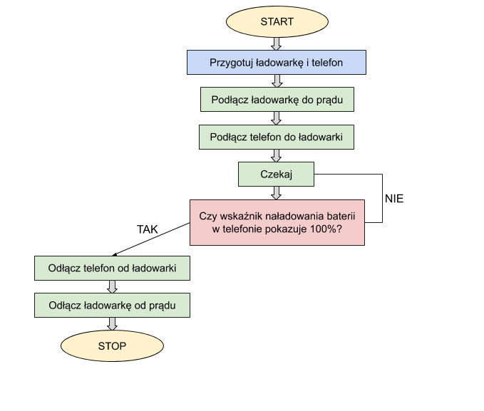
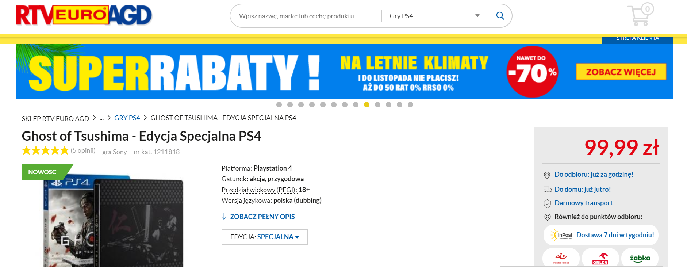

Tydzień I
Poszło mi bardzo dobrze:)

Poszło mi bardzo dobrze:)
Zagadkę rozwiązałam - zmieniłam kolor nagłówka na white.
Kolejne zadanie - schemat blokowy ładowania telefonu:

Zadanie - zrób komuś kawał! Na stronie popularnego sklepu ze sprzętem rtv i agd ;) zmieniałam cenę
gry ,,Ghost of Tsushima" na 99,99 zł.
Mąż już chciał zamawiać:)

Stworzyłam swoją tablicę na trello.
Dodałam nowe katalogi do homepage, stworzyłam nawigację pomiędzy plikami i wrzuciłam kilka zdjęć.
Udało mi się przejść labirynt i pośmiać z piosenki o frontendzie ;) Prezentacja z Katowic super
ciekawa!
Dodałam kilka skryptów do mojej strony:)
Popracowałam też nad kolorystyką swojej strony, skorzystałam z coolers do wybrania palety
odcieni.